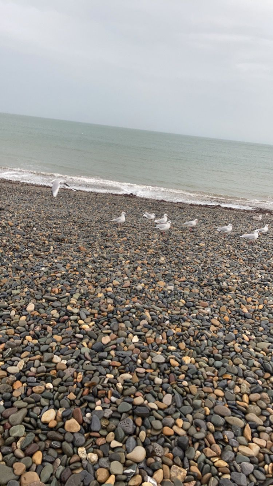
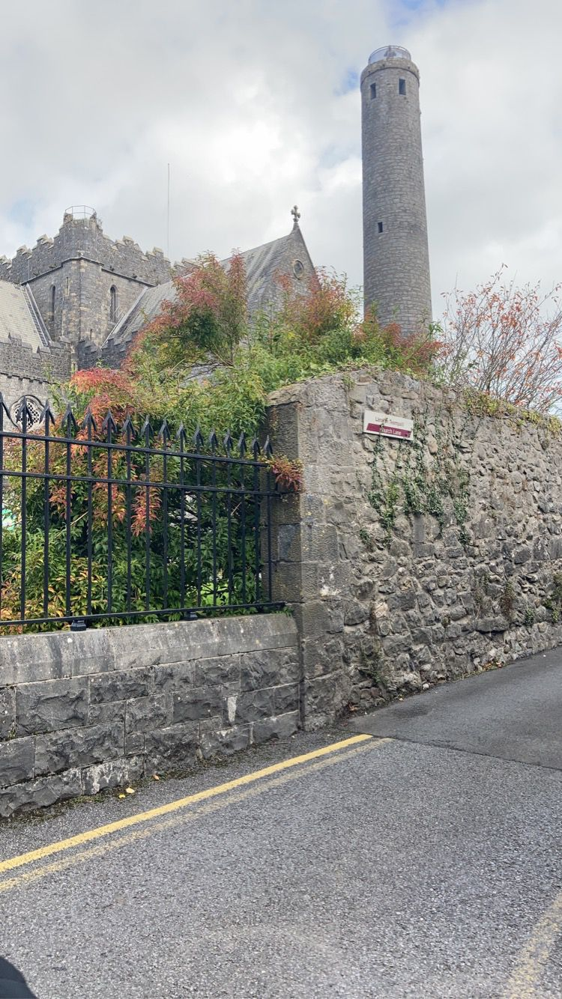
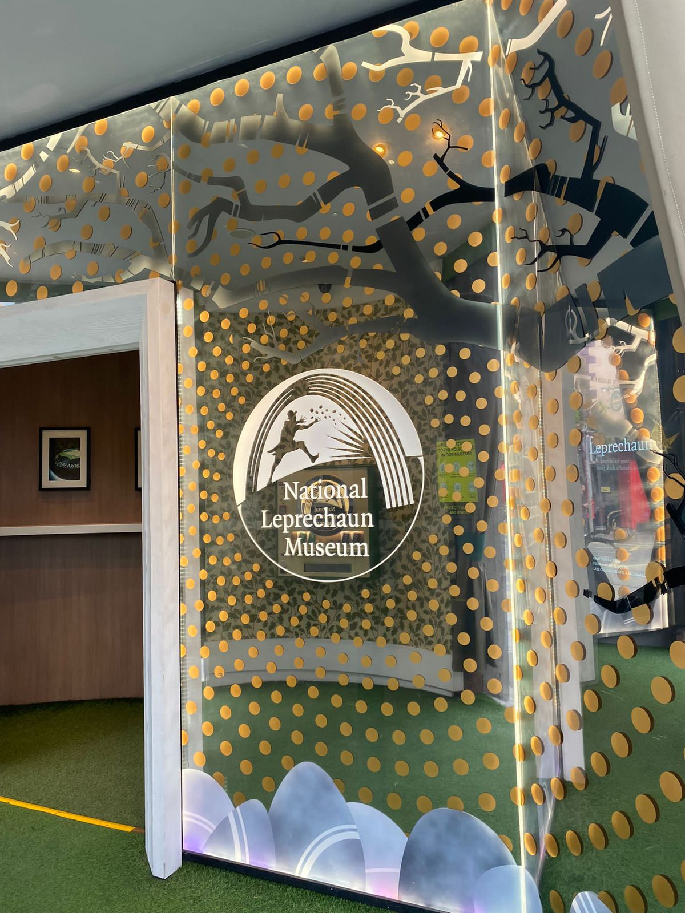
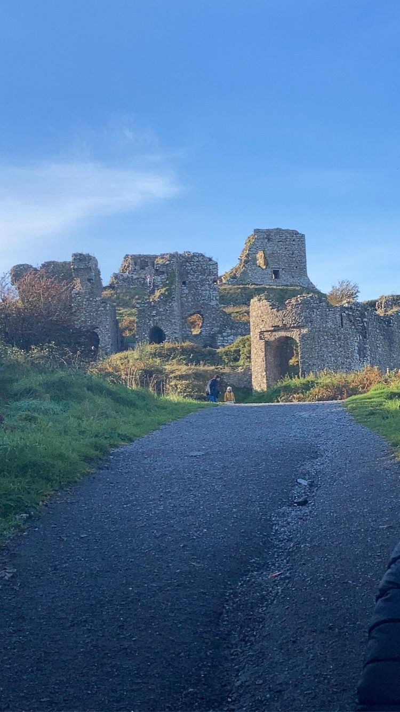

My pictures from Ireland
A few pictures I took a while back when I was on vacation in Ireland. Places include Kilkenny, Laois and Bray

Randomly Selected Pictures

Bray Beach, Bray, County Wicklow

St. Candice's Cathedral, Kilkenny, County Kilkenny

The National Leprechaun Museum, Dublin, County Dublin

Rock of Dunamase, County Laois
“Let your eyes look forward; fix your gaze straight ahead. Carefully consider the path for your feet, and all your ways will be established”
-Proverbs 4:25-26
Call to action! It's time!
Sign up for our product by clicking that button right over there!